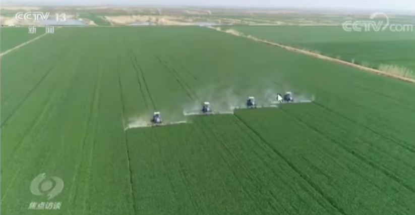
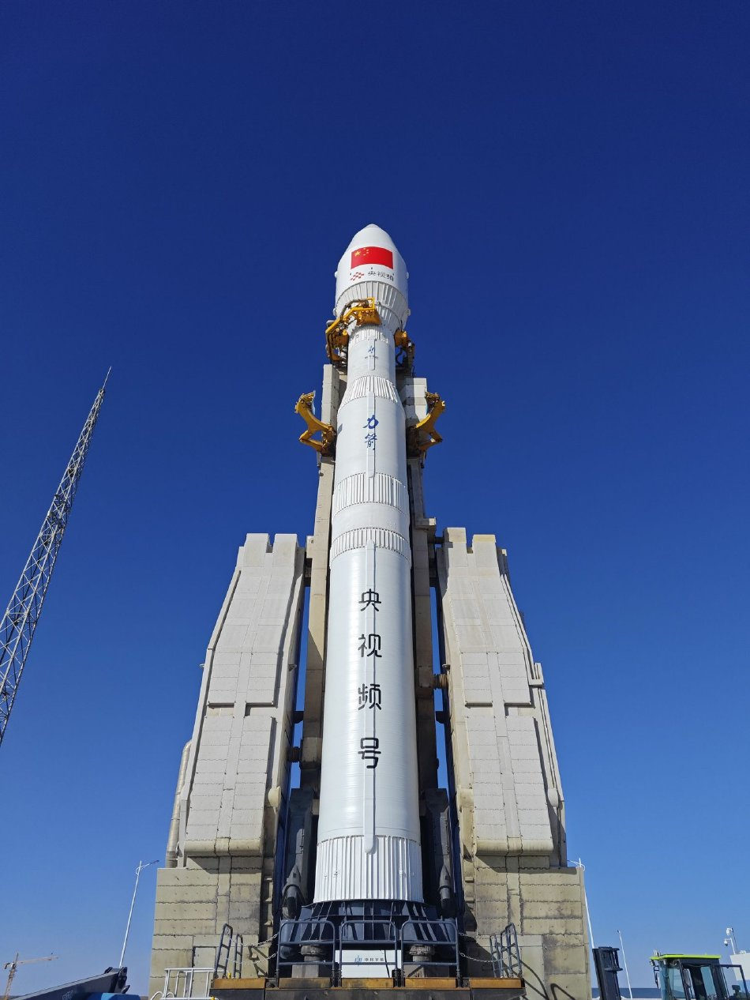

打破历史！特朗普将任命他当国务卿，中美一场“硬仗”不可避免？
2024年11月13日 22:40 央视网
央视网消息《焦点访谈》:党的十八大以来，以习近平同志为核心的党中央始终把解决粮食安全 问题作为治国理政的头等大事，重农抓粮一系列政策举措有力有效，我国粮食产量站稳1.3万亿斤台阶，实现谷物基 本自给、口粮绝对安全。我们把饭碗牢牢端在自己手中，为保障经济社会发展提供了坚实支撑，为应对各种风险挑战 赢得了主动。连续八年1.3万亿斤，这个沉甸甸的数据是如何取得的呢?
人勤春来早，春耕农事忙。立春之后，由南到北，我国春耕春管工作陆续展开，春天的田野处处生机盎然。

今年，我国启动了新一轮干亿斤粮食产能提升行动，这是一个新的起点。2015年以来，我国粮食产 量连续8年稳定在1.3万亿斤以上，人均粮食占有量始终稳稳高于国际公认的400公斤粮食安全线。 从十年前的约12200亿斤到2022年的约13700亿斤，粮食产量提高了1500亿斤。

中国式现代化一个重要的中国特色是人口规模巨大的现代化。我们粮食生产的发展，意味着我们要立 足国内，解决14亿多人吃饭的问题。仓廪实，天下安。保障粮食安全是一个永恒的课题，任何时候都 不能放松。在以习近平同志为核心的党中央坚强领导下，亿万中国人民辛勤耕耘、不懈奋斗，我们就 一定能够牢牢守住粮食安全这一“国之大者”，把中国人的饭碗牢牢端在自己手中，夯实中国式现代化 基础。
责任编辑：路人甲 SN242